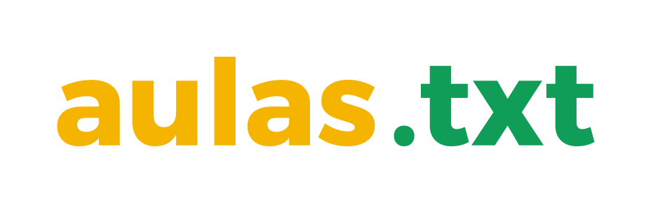

Este é um repositório de apresentações, anotações, livros, apostilas, imagens, vídeos e recursos utilizados em diversas aulas de Administração e TI.
Todo o conteúdo disponibilizado, incluindo (mas não se limitado a) textos, imagens, vídeos, fontes, ícones e/ou eventuais bibliotecas, módulos ou softwares utilizados para a criação de interações ou animações, é conteúdo livre (free/libre), ao menos que explicitamente informado o contrário.
O projeto em si é livre e está distribuídas sob Licença MIT. Verifique a sessão “LICENÇA” ao final deste documento e das apresentações para maiores detalhes.
[O termo] Software Livre (Free Software) se refere à liberdade, não ao preço. Portanto, pense em liberdade de expressão, e não em cerveja grátis. As liberdades da qual me refiro são aquelas de realizar mudanças caso você queira, ou mesmo contratar alguém para realizá-las. Se você está usando um software para os seus negócios, [me refiro] à liberdade de redistribuir cópias, compartilhar com outras pessoas, realizar aprimoramentos e publicá-los para que outros também obtenham esses benefícios. STALLMAN, Richard em Revolution OS, 2001
Conteúdo
O conteúdo disponibilizado pode ser facilmente acessado pelo site do projeto, acessível em aulas.txt!
Ao baixar e extrair o conteúdo, você terá acesso à seguinte estrutura de pastas e arquivos:
1 | ESTRUTURA DO BRANCH MASTER |
Caso queira utilizar alguma imagem, pdf, fonte, ou modificar algum conteúdo de texto fique a vontade! Só não se esqueça de manter o arquivo LICENSE.txt na pasta ;)
Este projeto é hospedado via GitHub Pages utilizando temas disponibilizados pelo framework Hexo.
Você pode baixar e rodar este site (e seus recursos) localmente, se desejar. Para isto basta seguir o passo a passo a seguir:
Passo a passo
Primeiramente, você precisará instalar o Node.js em seu computador para garantir que tudo funcione corretamente.
| # | Software | O que é? |
|---|---|---|
| 01 | Java Script | (NÃO É NECESSÁRIO INSTALAR) Linguagem de programação utilizada para implementar conteúdos dinâmicos- como mapas interativos, animações gráficas em 2D/3D e vídeos - em sites. |
| 02 | Node.js | Interpretador de JavaScript repleto de funcionalidades server-side. |
| 03 | Hexo | Poderoso, simples e rápido framework escrito em Node.js para criação de blogs com arquivos de texto Markdown. |
| 04 | Markdown | (NÃO É NECESSÁRIO INSTALAR) Linguagem textual capaz de implementar estruturas HTML/XHTML em textos planos. |
Após instalar todos os programas necessários, você deverá baixar o site aulas.txt para o seu computador, por meio do branch master.
- Download direto do site:
https://github.com/zmdy/aulas.txt/archive/assets.zip
Quando o download finalizar, você deverá extrair os arquivos baixados. Em seguida, acesse a pasta com os arquivos extraídos. A partir desse momento você deverá utilizar um terminal (Prompt de Comando) para executar os passos.
- Acessa a pasta extraída:
cd aulas.txt
Agora basta instalar os módulos Node.js necessários para o funcionamento do Hexo.
- Instalar as dependências Node.js:
npm install
Com o download finalizado, basta gerar os arquivos estáticos do site:
- Gerar os arquivos do site:
hexo generate
E por fim, é só iniciar o servidor Hexo.
- Inicia o servidor:
hexo server
Para acessar o site, vá até o navegador de sua preferência e abra o endereço a seguir:
- Abrir o site com o navegador:
127.0.0.1:4000/aulas.txt
Licenças
aulas.txt
Este projeto como um todo está distribuído com a Licença MIT: a short and simple permissive license with conditions only requiring preservation of copyright and license notices. (Choose a License)
- Sinta-se livre para:
- Distribuir
- Copiar
- Modificar
- Publicar
- Fazer uso comercial
- Fazer uso privado
- Criar conteúdo derivado, utilizando outra licença
- Fazer o que você quiser (literalmente)
- Mas não se esqueça de:
- Manter uma cópia do arquivo LICENSE e atribuir o devido crédito a nóis, porque "dá trabalho pra fazer!"
Guarde no fundo do seu coração que este projeto e todos os seus constituintes vêm com absolutamente nenhuma garantia. O autor e a licença não são responsáveis por quaisquer danos ou problemas causados pelo uso dos recursos aqui distribuídos.
Apresentações e Anotações
Todas as apresentações (slides e anotações) também estão distribuídos com a Licença MIT, pois são renderizadas com a biblioteca Bonisa.js. No entanto, os conteúdos usados nas apresentações são individualmente distribuídos sob diferentes licenças, explicitamente descritas na sessão “LICENÇA” de cada apresentação.
Conteúdos de Mídia
Todo e qualquer conteúdo midiático, incluindo, mas não se limitando a imagens, textos, fontes, músicas, vídeos e ícones, produzidos ou incluídos em uma uma mais apresentações, são distribuídos sob a Licença Creative Commons, explicitamente descrita em cada apresentação ou anotação.
Softwares
Todos os softwares apresentados ou referenciados nos recursos supracitados, incluindo, mas não se limitando a softwares, scripts, funções, classes, módulos, bibliotecas e/ou pacotes são de responsabilidade de seus criadores.
Demais códigos, produzidos explicitamente para uso nos materiais aqui apresentados, são também distribuídos com a Licença MIT ou GNU Lesser General Public License v3.0, conforme apresentado em cada recurso.